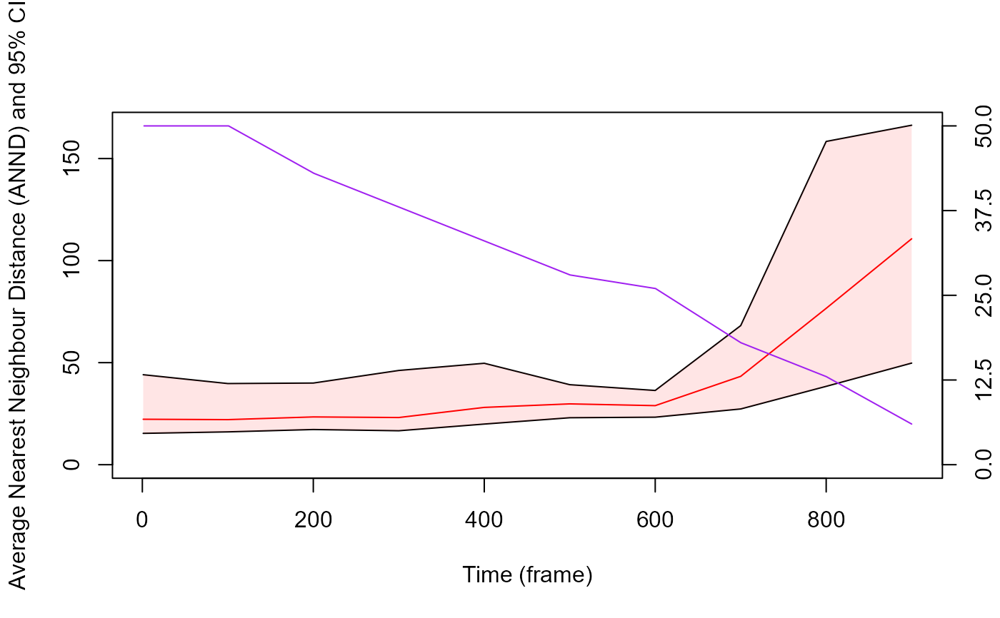

Given a list of data frames containing tracking information for each tracklet (including the timeline) this function returns the Average Nearest Neighbour Distance among tracklets along a specified timeline. Also, if bootn parameter is above 0, the function compute studentize 95 % CI using bootstrapping method.
Usage
ANND(
trackDat,
timeCol = NULL,
Tinterval = NULL,
sampling = NULL,
scale = NULL,
bootn = 0,
progress = TRUE
)Arguments
- trackDat
A list of data frame containing tracking information for each tracklet (including a timeline).
- timeCol
A character string corresponding to the name of the column containing Time information (e.g., "frame").
- Tinterval
A vector containing two numeric values expressed in the timeline unit and specifying the time window on which the computation is performed (default is null, meaning the computation will be performed on the whole timeline).
- sampling
A numeric value expressed in the timeline unit and specifying the subsampling step used to to perform the computation (it allow to make computation faster). In other words, it determine the resolution of the returned results (e.g., a value of 5000 mean that values will be computed every 5000 time unit).
- bootn
A numeric value corresponding to the number of bootstrap sampling used to compute studentize 95% confidence interval (default = 0, meaning bootstrap will be not performed).
- progress
A logical value (i.e., TRUE or FALSE) indicating whether a progress bar should be displayed to inform process progression (default = TRUE).
Value
this function returns a list containing three elements:
"ANND": a data frame containing 6 columns:
"ANNDmean": the averaged Nearest Neighbour Distance for each sampling step.
"97.5%": the upper limit of the confidence interval (97.5%).
"2.5%": the lower limit of the confidence interval (2.5%).
"ANNDsd": the standard deviation of the Average Nearest Neighbour Distance for each sampling step.
"nInd": the number of particules used to compute the Averaged Nearest Neighbour Distance for each sampling step.
"timeCol": the timeline according to timeCol and sampling arguments.
"RawND": a list containing the raw neighbour distance computed among each particles across each time unit:
"timeCol_index": a list of vector corresponding to the tracklet identity containing the distance to each detected particles in the time unit.
"BootSampling": a list of lists corresponding to each time unit sampled during the bootstrap and containing:
"sampledTracks": the identity of the tracklet sampled at each bootstrap iteration (the length of the list is equal to bootn argument).
"sampledValues": the nearest neighbour distance values for each sampled tracklet at each bootstrap iteration (the length of the list is equal to bootn argument).
Examples
set.seed(2023)
# generate some dummy tracklets
## start to specify some parameters to generate tracklets
TrackN <- 50 # the number of tracklet to simulate
TrackL <-
100:1000 # the length of the tracklets or a sequence to randomly sample tracklet length
id <- 0
TrackList <- stats::setNames(lapply(lapply(seq(TrackN), function(i)
trajr::TrajGenerate(sample(TrackL, 1), random = TRUE, fps = 1)), function(j) {
id <<- id + 1
data.frame(
x.pos = j$x - min(j$x),
y.pos = j$y - min(j$y),
frame = j$time,
identity = paste("Tracklet", id, sep = "_")
)
}), seq(TrackN))
# compute the ANND with a sampling of 100 time unit
ANNDRes <-
MoveR::ANND(
TrackList,
timeCol = "frame",
sampling = 100,
scale = 1,
bootn = 500
)
#> Warning: for time unit = [988], only 1 or no tracklet detected, the returned neighbour distance is NA
# the results can be retrieved by accessing the "ANND" data frame
str(ANNDRes[["ANND"]])
#> 'data.frame': 11 obs. of 6 variables:
#> $ ANNDmean: num 22.3 22.1 23.4 23.1 28.1 ...
#> $ 97.5% : num 15.4 16.1 17.2 16.6 19.9 ...
#> $ 2.5% : num 44.1 39.8 40 46.2 49.7 ...
#> $ ANNDsd : num 35.1 30.9 26.5 27.9 31.1 ...
#> $ nInd : int 50 50 43 38 33 28 26 18 13 6 ...
#> $ frame : num 1 100 200 300 400 500 600 700 800 900 ...
# And hence you can plot it against the timeCol (here "frame")
## remove the NA to avoid problem when plotting the confidence interval
ANNDRes[["ANND"]] <-
ANNDRes[["ANND"]][!is.na(ANNDRes[["ANND"]]$ANNDmean), ]
plot(
ANNDRes[["ANND"]]$ANNDmean ~ ANNDRes[["ANND"]]$frame,
type = "l",
ylim = c(0, signif(max(
ANNDRes[["ANND"]]$`2.5%`, na.rm = T
), digits = 3)),
col = "red",
xlab = "Time (frame)",
ylab = "Average Nearest Neighbour Distance (ANND) and 95% CI"
)
lines(ANNDRes[["ANND"]]$`97.5%` ~ ANNDRes[["ANND"]]$frame)
lines(ANNDRes[["ANND"]]$`2.5%` ~ ANNDRes[["ANND"]]$frame)
polygon(
x = c(ANNDRes[["ANND"]]$frame, rev(ANNDRes[["ANND"]]$frame)),
y = c(ANNDRes[["ANND"]]$`2.5%`, rev(ANNDRes[["ANND"]]$`97.5%`)),
col = rgb(1, 0, 0, 0.1),
border = NA,
density = NA
)
# It is also possible to add the number of particles on which ANND was computed across time on the plot
# here we can see that the less particles detected, the higher the ANND which make sense.
par(new = TRUE)
plot(
NULL,
yaxt = "n",
ylab = "",
xlab = "",
axes = FALSE,
xlim = c(0, max(ANNDRes[["ANND"]]$frame)),
ylim = c(0, signif(max(
ANNDRes[["ANND"]]$nInd, na.rm = T
), digits = 3)),
)
axis(side = 4,
at = c(
0,
round(max(ANNDRes[["ANND"]]$nInd, na.rm = T)) / 4,
round(max(ANNDRes[["ANND"]]$nInd, na.rm = T)) / 2 ,
round(max(ANNDRes[["ANND"]]$nInd, na.rm = T)) / 4 + round(max(ANNDRes[["ANND"]]$nInd, na.rm =
T)) / 2,
round(max(ANNDRes[["ANND"]]$nInd, na.rm = T))
))
lines(ANNDRes[["ANND"]]$nInd ~ ANNDRes[["ANND"]]$frame, col = "purple")
